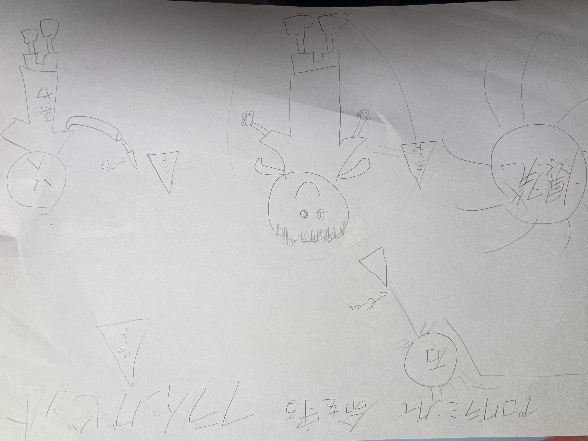

プログラミングで動いているもの グループの意見

電車の場合
まずfor文でドアの前に人がいるか、そうでないかのチェックを
繰り返す。
if文で、それを判断して場合に応じて、print（）で動作をする。
if文でelseを用いると、
if文で条件を決めて、それに会ったら、if文で動作、
条件に会わなかったらelse文で処理することになる。
ifで人がいたら、ドアを開ける、そうでないなら、
else文でドアを閉じるという風になる。。
自分のアイデア

説明
パワードスーツに搭載された飛来可能なビットが様々な危険な状況から
その身を守ってくれる。
例として,スケッチのような状況だと、
for文でどのような状況なのか把握をする。
落石、ナイフ攻撃、爆発などの身が危険に晒される状況など。
落石ならビームで粉砕、ナイフ攻撃には物理的にビットで防御、
爆発にはビットから全身にバリアを展開、などするようにif文に書き込む
それらが無い安全な状況ならば、else文にパワードスーツにしまわれて
おくように書く